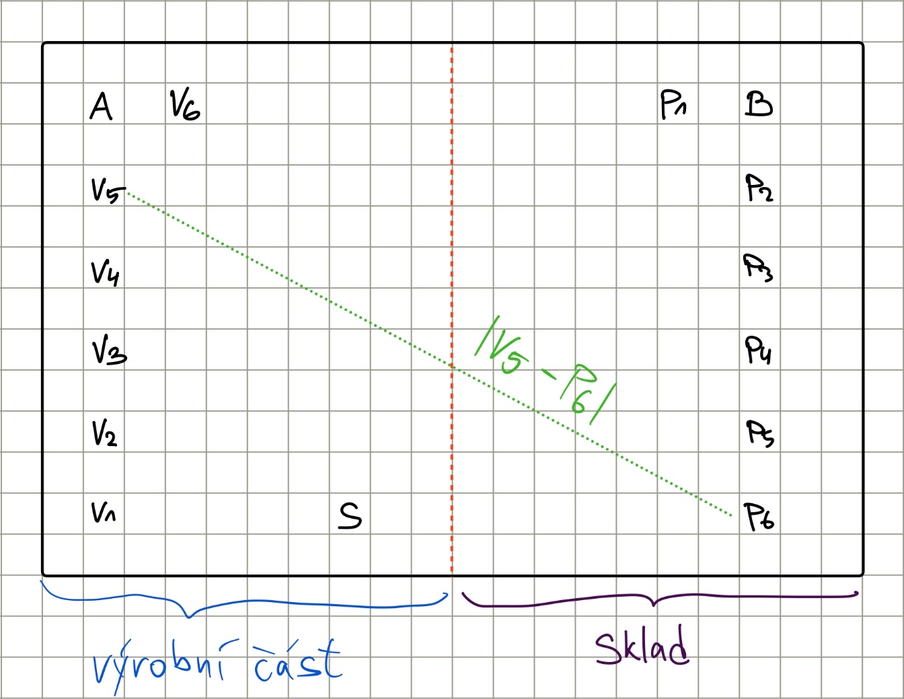

Zatímco první generace průmyslových robotů byla pevně ukotvena k podlaze a vykonávala opakující se pohyby, moderní logistika vyžaduje flexibilitu. Do popředí se tak dostávají autonomní mobilní roboty. Na rozdíl od starších systémů, které pouze sledovaly magnetickou pásku na podlaze, se AMR musí v prostoru orientovat samostatně. Využívají k tomu technologii SLAM (Simultaneous Localization and Mapping) a pokročilé algoritmy pro hledání cesty.
Základním kamenem navigace je schopnost robota najít nejefektivnější cestu z bodu A do bodu B v prostředí plném překážek. V robotice se pro tento účel nejčastěji využívá algoritmus A*, který si vybírá další krok na základě „ceny“ pohybu a odhadu budoucí ceny, takzvané heuristiky. Pro každé políčko, na které může robot vstoupit, vypočítá hodnotu podle vzorce:
… reálná cena nutná k dostání se na aktuální místo
… heuristický odhad, předpokládaná vzdálenost k cíli
Pro správnou funkčnost (optimálnost) algoritmu A* musí být heuristika splnitelná, tedy nesmí nikdy přecenit cenu k cíli (není možné, aby se robot do cíle dostal s nižší cenou než s tou, kterou odhadne daná heuristika).
V naší simulaci použijeme skladního robota, který převáží zboží od výrobních linek do skladu výrobků na skladní police. Robot může provádět akce vlevo, vpravo, nahoru, dolů a jakýkoli z diagonálních pohybů, může také odložit náklad do police skladu (každý výrobek patří do své police) a sebrat výrobek z výrobní stanice. Sbírání a pokládání výrobků probíhá provedením příslušné akce na pozici výrobní stanice nebo police. Všechny akce mají stejnou cenu: 1. Robot začíná na pozici S, naloží právě jeden kus každého výrobku na pozicích výrobních stanic a převáží je na police na pozicích nacházejících se ve skladu. Kapacita robota není pro náš případ omezena (uveze všech 6 výrobků). Mapa výrobního závodu vypadá následovně:

Které z následujících heuristik nemůžeme použít pro dosažení optimality algoritmu A* v našem simulovaném výrobním závodu (pro heuristiku počítanou pro počáteční pozici S a počet výrobků N)?
- 1
- 1
Odpověď dostanete pomocí následujícího vzorce, kde je součet indexů nepřípustných heuristik ze seznamu výše: